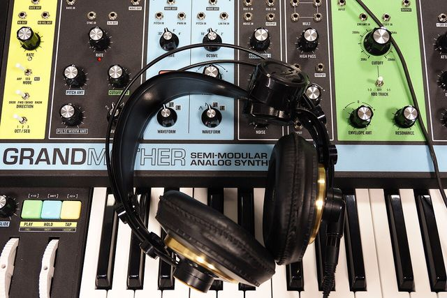

Scheda 092 · 2018 · Stati Uniti
Moog Grandmother
Un sintetizzatore del 2018 con dentro una molla d'acciaio, per il riverbero come nei vecchi amplificatori
Un monofonico già cablato dentro, che suona appena acceso e si ricabla da fuori coi cavetti.
Il suono vero · 0:45
Una Grandmother vera che suona una sequenza in la minore a 90 bpm col suo riverbero a molla, presa in linea da un preamplificatore, senza equalizzazione (anteprima mp3 di Freesound).
0:00 / 0:45
Registrazione di JupiterWhistles · CC0 · Freesound · estratto di 45 s, volume normalizzato
- USCITA
- 2018
- TASTI
- 32
- OSCILLATORI
- 2
- MEMORIE
- 0
La macchinaChe cos'è
Il pannello è a strisce gialle, azzurre e verdi, e sotto ci sono 32 tasti che sentono la forza. Moog la presenta a metà maggio del 2018, alla vigilia del suo festival a Durham. Non salva nessun suono, il suono è dove stanno le manopole. Sul numero delle prese le recensioni non tornano, 41 per Sound On Sound e 35 per MusicRadar. Anche i colori hanno diviso, lo scrive MusicRadar, e CDM l'ha chiamata il Moog più colorato di sempre. A me piacciono, perché ogni sezione si trova al primo sguardo, anche al buio di un palco.
Chi l'ha costruitaMoog Music, mezzo secolo dopo i modulari
Qui Moog non vuol dire Bob Moog, che è morto nel 2005 e questa macchina non l'ha vista. La fa la ditta col suo nome, e chi l'abbia disegnata non sono riuscito a scoprirlo. Moog dice però da dove viene. I circuiti si rifanno ai modulari degli anni '60 e '70, il filtro al modulo 904A e il riverbero al 905. E la Grandmother si attacca alle altre macchine di casa, la Mother-32 e il DFAM, e ai moduli Eurorack. Per presentarla, nel 2018, Moog chiede un video ad Adrian Younge, che di colonne sonore e vecchi strumenti vive.
Come funzionaCosa c'è dentro
Semi-modulare vuol dire che i pezzi sono già collegati dentro, in un ordine che funziona, quindi accendete e suona senza un cavo. Gli oscillatori sono 2 e uno può agganciarsi all'altro. Poi c'è il filtro a scala di Moog, passa-basso a 4 poli, e un passa-alto più leggero. Un cavetto infilato in una presa scavalca il collegamento interno, e da lì il percorso lo decidete voi. Il sequencer tiene 3 sequenze fino a 256 passi, e c'è un arpeggiatore. Provate a mandare dentro il suono di qualcos'altro. Filtro e molla accettano un ingresso esterno.
Chi l'ha usataNei dischi
- Mike Deannelle sessioni di «4:20», il suo disco strumentale del 2020
- Adrian Youngeil video di presentazione, nel 2018
Da ascoltare
Mike Dean, «The Eighth Night» (2020)
Le 2 parti su «4:20». Moog ha filmato Dean mentre la costruisce e dice che è tutta Grandmother, ma lo dice solo Moog.
L'aneddotoUna storia
Maggio 2018, Durham, nella Carolina del Nord. Moog presenta la Grandmother due giorni prima che cominci il Moogfest. I primi 500 esemplari hanno un distintivo «Moogfest 2018» e arrivano con una giacca di jeans di Moog. All'inizio si comprano soltanto da Guitar Center, la catena americana di negozi di strumenti. Poi la Grandmother arriva anche negli altri negozi. La giacca no, quella è rimasta ai primi 500.
Avvertenze
Nessuna memoria per i suoni. Prima di spegnere fotografate il pannello, perché alla riaccensione conta solo dove stanno le manopole.
Il carosello · si aprono in grande
Le 6 tavole
Da dove viene
Fonti
- «Moog debut semi-modular Grandmother synth» — Sound On Sound, 15/05/2018 verificata il 2026-11-17
- «Moog Grandmother review» — MusicRadar, 18/07/2018 verificata il 2026-11-17
- CDM, 15/05/2018 verificata il 2026-11-17
- Attack Magazine, 14/05/2018 verificata il 2026-11-17
- Gearnews, 14/05/2018 verificata il 2026-11-17
- Synthtopia, 11/05/2018 verificata il 2026-11-17
- Digital Music News, 16/05/2018 verificata il 2026-11-17
- Intervista a Mike Dean — Albumism, 05/06/2020 verificata il 2026-11-17
- MatrixSynth (testo di Moog), 20/04/2020 verificata il 2026-11-17
- Mike Dean, «4:20» (2020), tracce — MusicBrainz verificata il 2026-11-17
- Mike Dean, «4:20» — Apple Music verificata il 2026-11-17
- «Mike Dean shares solo 4:20 mixtape» — Exclaim!, 20/04/2020 verificata il 2026-11-17
Foto: Henry Söderlund · CC BY 2.0 · Wikimedia Commons
Foto nelle tavole: Henry Söderlund · CC BY 2.0 · Wikimedia Commons
Suono: Registrazione di JupiterWhistles · CC0 · Freesound · estratto di 45 s, volume normalizzato